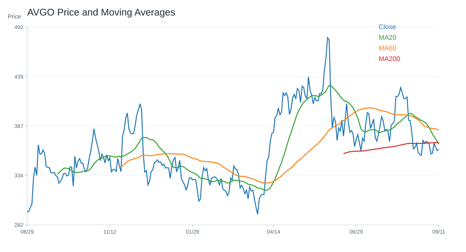
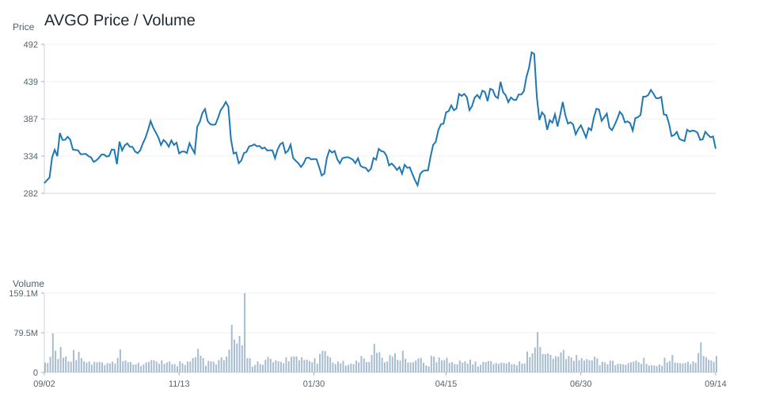
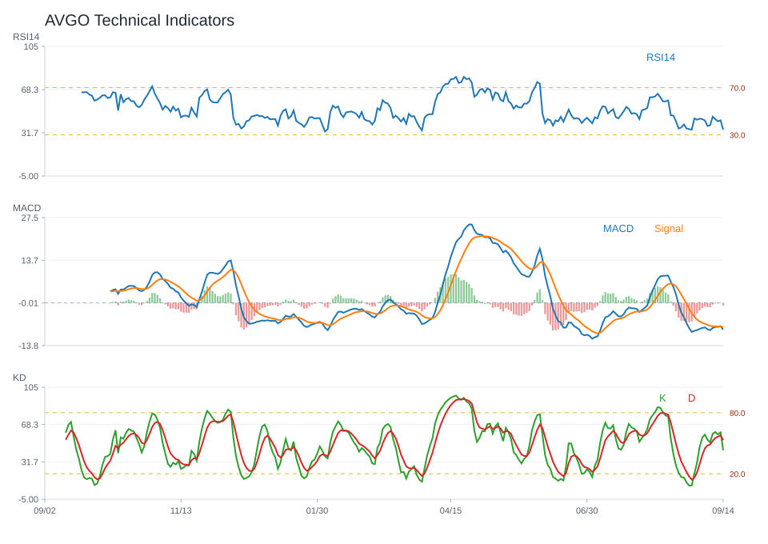
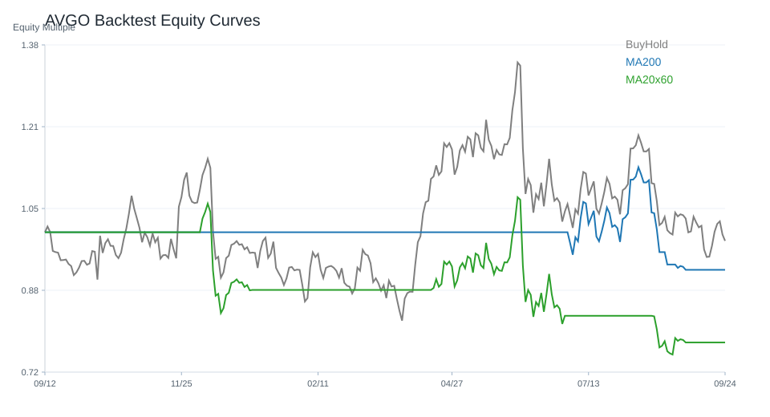

20 日
-10.74%60 日
6.64%觀察等級
維持觀察市場資料
2026-07-06- 成交量24,505,200.00
- 20 日均線382.06
- 60 日均線405.60
- 200 日均線361.52
- 距 52 週高點-22.36%
- 距 52 週低點37.56%
技術指標
Python 計算- RSI1444.72
- MACD hist-1.56
- KD K/D28.05 / 24.03
- ADX21.72
- 布林上緣405.71
- 布林下緣358.42
量價與事件
規則式分析- 量價型態量能中性
- 量價分數-1
- 20 日量比0.75
- OBV 20 日變化-8.72%
- 事件偏向資料不足
- 事件分數資料不足
研究訊號與觀察等級
不是買賣建議維持觀察；研究訊號 中性，分數 0。
正負條件尚未形成明確方向，維持一般追蹤。
- 20 日跌幅偏弱
- 跌破 20 日均線
- 站上 200 日均線
- MACD histogram 為負
- KD 偏多但未過熱
- 量價型態：量能中性
- 量價未出現明確偏多或偏空結構
- 20 日價格趨勢偏弱
回測摘要
歷史資料研究| 策略 | CAGR | Sharpe | 最大回撤 | 勝率 | 交易次數 |
|---|---|---|---|---|---|
| 價格高於 200 日均線 | 49.56% | 1.17 | -33.09% | 52.99% | 6 |
| 20/60 日均線交叉 | 27.00% | 0.85 | -44.44% | 51.79% | 7 |
| 買進持有 | 70.36% | 1.38 | -41.15% | 52.91% | 1 |
圖表
價格 / 量價 / 技術 / 回測AVGO 價格均線

AVGO 量價關係

AVGO 技術指標

AVGO 回測
